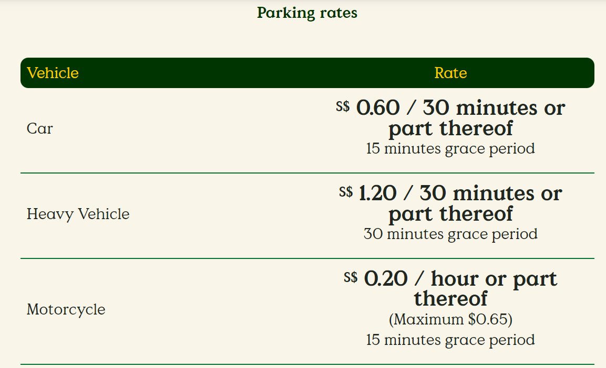

30 million visitors. 50 golden years. Over 3,500 birds across 400 species. Fly into Asia’s largest bird park!
Be awed by our colourful feathered friends!
Here’s something no-birdy should miss! Snuggle up to our African Hornbills,
learn more about Raptors,
and meet a chick nanny in this exclusive tour hosted by our friendly bird keepers.
Make your visit extra wild today!
For rates and booking, click here.
Catch our birds when they’re most active – during feeding sessions!
Listen to our keepers share stories and even get to feed our feather friends yourself.
Birds Available for feeding:
- African Birds
- Penguins
- Lories & Lorikeets
- Pelicans
- Flamingos
Click here to find out more!
Enjoy informative and entertaining live commentary from our keepers as well as close-up encounters with the birds as they are being fed.
What to expect in keeper talk:
- Bird Feeding
- Penguin Encounter
- Flamingo Feeding
- Pelican Chit-Chat
Click here to find out what the keeper talk is all about!

A multitude of fun activities awaits kids! From a watery playground for a splashing good time, uncovering an extensive egg collection and more!
Kids' Fun time include:
- Birdz of play
- Bird Discovery Centre
Click here to dive deep into how much fun the kids will have!
Our camps encourage kids to explore with self-learning opportunities,
team-bonding activities as well as unique insights into wildlife.
Sleep With the Penguins Family Camp:
- Exclusive tours and feeding sessions
- Meet & Greet our Mystery Animal Ambassadors
- Meet the Keepers
- Family Bonding: Pitch a tent together!
- Sleep in Penguin Coast
- Explore Jurong Bird Park
Click here to explore more about what the camps have to offer!!

Kings of the Skies
Location: Hawk Arena
Showtimes (approx. 20mins):
Morning Show: 10am/ Afternoon Show: 4pm
*Shows are available from Thursdays to Sundays, eves of, and on Public Holidays, and selected school holidays*

High Flyers
Location: Pool Amphitheatre
Showtimes (approx. 20mins):
Morning Show: 11am/ Afternoon Show: 3pm
*Shows are available from Thursdays to Sundays, eves of, and on Public Holidays, and selected school holidays*
Click here to purchase tickets
Park Entrance
Hawk Cafe
Get a taste of iconic Singaporean dishes right outside the park entrance!
Savour our best-selling hainanese chicken rice prepared with only the freshest ingredients by our chefs.
Other must-tries include laksa, nasi lemak and our western fare.
Opening Hours:830am-600pm
*Shows are available from Thursdays to Sundays, eves of, and on Public Holidays, and selected school holidays*
Dining in the Park
Pizza Hut Express
A favourite among families, piping hot pizzas await whenever you’re ready for a break.
Complete your meal with Pizza Hut’s signature garlic bread and spicy drumlets..
Opening Hours:830am-600pm
*Shows are available from Thursdays to Sundays, eves of, and on Public Holidays, and selected school holidays*
-Take the East-West MRT line bound for Tuas Link, and alight at Boon Lay (EW27).
-From the Boon Lay bus interchange, take Bus No. 194, which will take you straight to Jurong Bird Park.
1. Via Central Expressway (CTE) from City:
-Take the AYE towards Jurong
-Take Exit 17 onto Jalan Ahmad Ibrahim to reach Jurong Bird Park
2. Via Pan-Island Expressway from City:
- Take the PIE towards Jurong/Tuas
-Take Exit 36, and turn left onto Jalan Bahar towards Jalan Boon Lay
-Turn right at Jalan Ahmad Ibrahim to reach Jurong Bird Park

Click here to download PDF